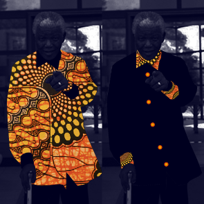
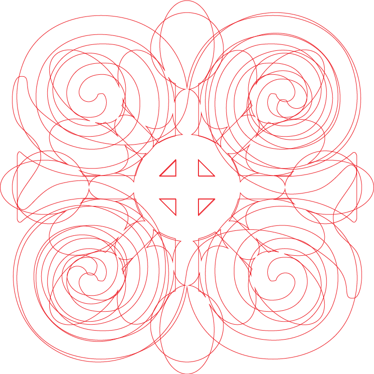
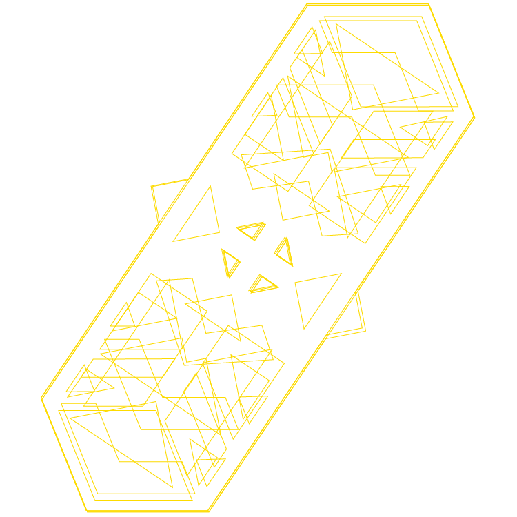

madiba2.0 are free DIY accessories for the contemporary cosmopolitan. Using our templates, you can 3-D print or laser cut your own ethnic products. We currently offer two sets of buttons, inspired by west-african symbols and textiles.
Our styles aim to comply with most unspoken, organizational dress codes that define a professional standard of dress. Put away those loud Hawaiian shirts and Madiba prints, but don't lose your special, expressive touch. Take your expressiveness from NSFW to STFW (style for the win!)
madiba2.0 | introduction
|  |
set01
Inspired by Akan adinkra symbols, traditionally, they are used in fabric, pottery and interior ornamentation. Tourism has expanded their common use to include t-shirts and jewelry. Print or cut your own set of each or mix all four for a more eclectic look.
DOWNLOAD SET01
|  | |||
Instructions | Cut or Print
Laser cutting
Navigate to set01 or set02. Click the link "For Laser" to download the zip file for that set. The folder will contain four Adobe Illustrator 8 files. Each file has the outline for each button design. Import into laser-cutting software and cut. Suggested materials to use are acrylic or wood.
3-D printing
Navigate to set01 or set02. Click the link "For 3-D" to download the zip file for that set. Download the button set to your computer. The folder will contain four .stl files optimal for MakerBot printing.|  | |||
set02
Inspired by more geometric textile motifs, this set of buttons is smaller and more discreet. As the overall shape of the entire group is similar, we suggest printing or cutting with several differently colored plastics, or using a brightly colored thread to sew buttons in place
DOWNLOAD SET02
 |
|||